Voyager：基于大语言模型（LLM）的开放式具身终身学习智能体
论文针对开放世界中具身 Agent 缺乏终身学习能力的问题：现有 LLM Agent 无法随时间持续获取、积累与迁移知识，且 LLM 难以一次性生成正确的动作代码。Voyager 在 Minecraft 中将 GPT-4 当作黑盒，用三个组件实现无人类干预的持续探索：自动课程（automatic curriculum）依据探索进度与 Agent 状态自底向上提出难度递增的任务；技能库（skill library）以可执行代码为动作空间，把自我验证通过的程序按描述 embedding 存入向量数据库，在相似情境检索 top-5 复用并组合出更复杂技能；迭代提示机制将环境反馈、执行错误与自我验证结论回填提示逐轮修正代码。结果显示 Voyager 发现的独特物品是 ReAct/Reflexion/AutoGPT 等基线的 3.3 倍，科技树解锁最快快 15.3 倍，技能库可零样本迁移到新世界，还能即插即用地提升 AutoGPT 的表现。这是'自动课程+技能库+迭代提示'这一 Agent 工程范式的代表性工作。
现有基于 LLM 的具身 Agent 不是终身学习者，无法在长时间跨度内逐步获取、更新、积累和迁移知识；同时 LLM 难以一次性稳定生成正确的动作代码。论文目标是构建首个 LLM 驱动的具身终身学习 Agent，在 Minecraft 中无人类干预地持续探索、习得多样技能并做出新发现。
Voyager 由三个组件构成：(1) 自动课程：用 GPT-4 基于'发现尽可能多的事物'的总目标，结合探索进度与 Agent 状态自底向上提出下一个任务，可视为 in-context 形式的 novelty search；(2) 技能库：以代码为动作空间（Mineflayer JavaScript API），将自我验证成功的程序按其描述的 embedding 存入向量数据库，新任务时用 GPT-3.5 生成的解题建议与环境反馈作为查询检索 top-5 相关技能，复杂技能由简单程序组合而成；(3) 迭代提示机制：执行生成的程序获得环境反馈与代码解释器报错，回填到 GPT-4 提示中逐轮改进，直到自我验证模块（critic agent）确认任务完成，最多 4 轮后换下一个任务。辅助手段包括：GPT-3.5 self-ask 生成问题并按 concept 从 wiki 知识库检索文档补充上下文（可选）、按完成任务数的 warm-up 调度逐步扩充提示信息、除课程用 temperature=0.1 外全部 temperature=0。全程仅通过 prompting 与 in-context learning 交互，无需参数微调或梯度更新。
探索：160 次提示迭代内发现 63 个独特物品，是基线（ReAct、Reflexion、AutoGPT）的 3.3×
科技树：wooden 级解锁快 15.3×、stone 级快 8.5×、iron 级快 6.4×（按提示迭代数计），且是唯一解锁 diamond 级的方法
地图覆盖：遍历距离比基线长 2.3×，穿越更多样地形
零样本泛化：清空物品栏并重置到新世界后，Voyager 能解决全部未见任务，基线在 50 次提示迭代内无法解决任何任务；技能库还能作为即插即用资产提升 AutoGPT 的表现
技能检索：在 309 个样本上 top-5 准确率达 96.5%
消融实验：automatic curriculum、skill library、environment feedback、execution errors、self-verification、GPT-4 六个设计选择均被验证关键，用 GPT-3.5 替换 GPT-4 生成代码后性能明显下降
鲁棒性：gpt-4-0314 与 gpt-4-0613 上性能大致相同
与 ReAct、Reflexion、AutoGPT 等文本 Agent 相比，Voyager 首次将自动课程、技能库与迭代提示三者结合实现终身学习：技能库以可执行代码形式积累可复用、可组合、可解释的技能，缓解灾难性遗忘；自动课程自底向上由好奇心驱动，区别于以往 Minecraft 高层规划器按固定配方分解任务的做法。与执行引导的代码生成工作（execution-guided、majority voting、LEVER、CLAIRIFY 等）相比，其独特之处在于将环境反馈、执行错误与自我验证（判断任务成功）整合进面向具身控制的迭代提示机制。系统级对比表中，Voyager 是唯一同时具备自动课程、迭代规划与技能库且无需任何梯度更新的方法。
相关度级别：high
命中能力域：3.1 上下文工程与记忆 | 3.2 提示工程 | 3.3 Agent 架构与工具使用 | 3.5 评测与可靠使用
理由：论文直接命中团队多个能力域：技能库是典型的 Agent 记忆系统（描述 embedding 索引 + 向量数据库 + top-5 检索，检索准确率 96.5%），对应 3.1；迭代提示机制（环境反馈/执行错误/自我验证回填、warm-up 调度、self-ask + wiki 知识库补充上下文）是提示工程与上下文组织的系统性实践，对应 3.2 与 3.1；自动课程 + 代码动作空间 + critic 自我验证构成的 Agent loop 与技能系统是 3.3 的核心内容；与 ReAct/Reflexion/AutoGPT 的系统对比、6 项消融、成本分析（GPT-4 比 GPT-3.5 贵 15×）以及人类反馈构建 3D 结构属于 3.5。'技能库即插即用可增强其他方法'的结论对团队构建可复用技能/工具资产有直接参考价值。注意它是单 Agent 系统（curriculum/action/critic/skill manager 是同一 Agent 的分工组件），不涉及 3.4 的多 Agent 协作。
建议动作：深入精读并做内部分享
arXiv:2305.16291v2 [cs.AI] 19 Oct 2023
Guanzhi Wang 1 2 、Yuqi Xie 3 、Yunfan Jiang 4 ∗ 、Ajay Mandlekar 1 ∗
1 5 1 3 1 † 1 2 †
envelope , envelope
Chaowei Xiao 、Yuke Zhu 、Linxi 'Jim' Fan 、Anima Anandkumar 1 NVIDIA，2 加州理工学院（Caltech），3 德克萨斯大学奥斯汀分校（UT Austin），4 斯坦福大学（Stanford），5 威斯康星大学麦迪逊分校（UW-Madison）∗ 同等贡献 † 同等指导 envelope 通讯作者 https://voyager.minedojo.org
我们提出 VOYAGER，这是首个由大语言模型（LLM）驱动、运行于 Minecraft 中的具身终身学习智能体，它能够在无人工干预的情况下持续探索世界、习得多样化技能并做出新发现。VOYAGER 由三个关键组件构成：1）一个最大化探索的自动课程；2）一个不断增长的、由可执行代码构成的技能库，用于存储和检索复杂行为；3）一种新的迭代提示机制，它融合环境反馈、执行错误和自我验证以改进程序。VOYAGER 通过黑盒查询与 GPT-4 交互，从而无需进行模型参数微调。VOYAGER 所开发的技能在时间上可扩展、可解释且可组合，这使智能体的能力快速复合增长，并缓解了灾难性遗忘。实验表明，VOYAGER 展现出强大的上下文终身学习（in-context lifelong learning）能力，并在游玩 Minecraft 方面表现出卓越的熟练度。与先前最先进（SOTA）方法相比，它获得的独特物品多 3.3 倍，行进距离长 2.3 倍，解锁关键科技树里程碑的速度最高快 15.3 倍。VOYAGER 能够在一个新的 Minecraft 世界中利用已习得的技能库从零开始解决新任务，而其他技术则难以泛化。
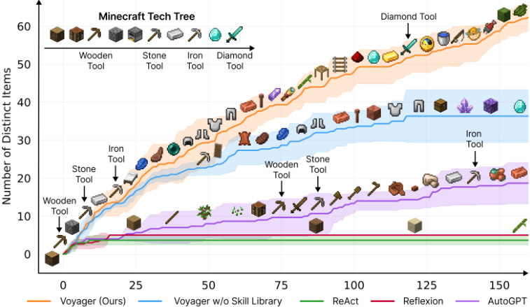
1
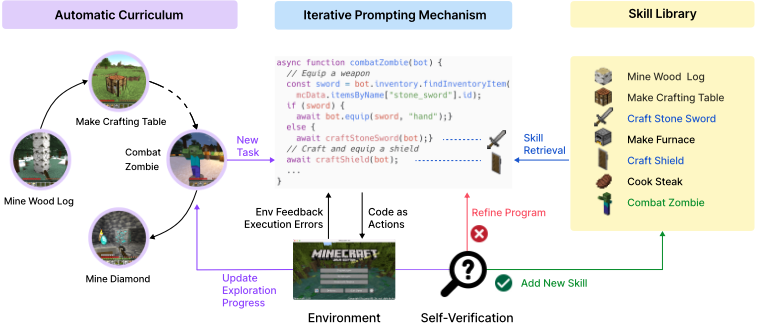
构建能够在开放式世界中持续探索、规划并发展新技能的通用具身智能体（embodied agent），是人工智能（AI）界的一项重大挑战 [1-5]。经典方法采用强化学习（RL）[6, 7] 和模仿学习 [8-10]，其作用于原始动作层面，这在系统性探索 [11-15]、可解释性 [16-18] 和泛化 [19-21] 方面可能颇具挑战。基于大语言模型（LLM）智能体的最新进展，利用预训练 LLM 中封装的世界知识来生成一致的动作计划或可执行策略 [16, 22, 19]。它们已被应用于游戏和机器人等具身任务 [23-27]，以及不涉及具身的 NLP 任务 [28-30]。然而，这些智能体并非终身学习者，无法在较长的时间跨度内逐步获取、更新、积累并迁移知识 [31, 32]。
让我们以 Minecraft 为例。与 AI 领域所研究的大多数其他游戏 [33, 34, 10] 不同，Minecraft 没有预设的最终目标或固定的故事情节，而是提供了一个拥有无限可能性的独特游乐场 [23]。Minecraft 要求玩家探索广阔的程序化生成的 3D 地形，并利用收集到的资源解锁科技树。人类玩家通常从学习基础知识开始，例如挖取木材和烹饪食物，然后再进阶到更复杂的任务，如与怪物战斗和制作钻石工具。我们认为，一个有效的终身学习智能体应当具备与人类玩家相似的能力：（1）根据其当前技能水平和世界状态提出合适的任务，例如，若发现自己身处沙漠而非森林，则先学会采集沙子和仙人掌，再采集铁；（2）根据环境反馈改进技能，并将已掌握的技能存入记忆，以便日后在类似情境中复用（例如，与僵尸战斗类似于与蜘蛛战斗）；（3）以自我驱动的方式持续探索世界并寻找新任务。
朝着这些目标，我们提出 VOYAGER——首个由 LLM 驱动的具身终身学习智能体，它能够在 Minecraft 中驱动探索、掌握广泛的技能，并在无需人工干预的情况下不断取得新发现。VOYAGER 的实现依赖于三个关键模块（图 2）：1）一个使探索最大化的自动课程（automatic curriculum）；2）一个用于存储和检索复杂行为的技能库（skill library）；3）一种新的迭代提示机制，用于生成具身控制所需的可执行代码。我们选择以代码作为动作空间，而非低级运动指令，因为程序能够自然地表示时间上延展且可组合的动作 [16, 22]，而这对于 Minecraft 中的许多长时程任务至关重要。VOYAGER 通过提示（prompting）和上下文学习（in-context learning）[36-38] 与黑盒 LLM（GPT-4 [35]）进行交互。我们的方法无需访问模型参数，也无需显式的基于梯度的训练或微调。
更具体地说，VOYAGER 尝试解决由自动课程（automatic curriculum）提出的难度递增的任务，该课程会考虑探索进度和智能体的状态。该课程由 GPT-4 依据“发现尽可能多的多样化事物”这一总体目标生成。这种方法可以被视为一种上下文（in-context）形式的新颖性搜索（novelty search）[39, 40]。VOYAGER 通过存储有助于成功完成任务的动作程序，逐步构建一个技能库。
2
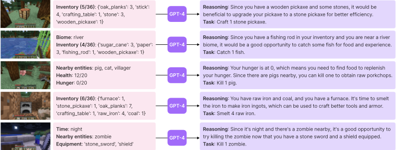
每个程序都以其描述的嵌入（embedding）为索引，以便将来在类似情形下能够被检索。复杂技能可以通过组合更简单的程序来合成，这使 VOYAGER 的能力随时间快速复合增长，并缓解了其他持续学习方法中的灾难性遗忘问题 [31, 32]。
然而，大语言模型（LLM）难以稳定地一次性生成正确的动作代码 [41]。为应对这一挑战，我们提出了一种迭代提示机制，该机制：(1) 执行生成的程序，以从 Minecraft 仿真中获取观察结果（例如物品栏清单和附近生物）以及来自代码解释器的错误跟踪信息（如有）；(2) 将这些反馈纳入 GPT-4 的提示中，进行新一轮的代码改进；(3) 重复上述过程，直到自我验证模块确认任务完成，此时我们将该程序提交到技能库（例如 craftStoneShovel() 和 combatZombieWithSword()），并向自动课程查询下一个里程碑（图 2）。
实验表明，VOYAGER 展现出强大的上下文终身学习（in-context lifelong learning）能力。它能够构建一个不断增长的技能库，其中的动作程序可复用、可解释，并且可泛化到新任务。我们在开源 Minecraft AI 框架 MineDojo [23] 中，系统性地将 VOYAGER 与其他基于 LLM 的智能体技术（例如 ReAct [29]、Reflexion [30]、AutoGPT [28]）进行了对比评估。VOYAGER 优于先前的 SOTA 方法：获得的独特物品多 3.3 倍，解锁关键科技树里程碑的速度最高快 15.3 倍，行进距离长 2.3 倍。我们进一步证明，VOYAGER 能够在一个新的 Minecraft 世界中利用已习得的技能库从零开始解决新任务，而其他方法则难以泛化。
VOYAGER 由三个新颖的组件构成：（1）自动课程（automatic curriculum，第 2.1 节），为开放式探索提出目标；（2）技能库（skill library，第 2.2 节），用于开发日益复杂的行为；（3）迭代提示机制（iterative prompting mechanism，第 2.3 节），生成可执行代码以实现具身控制。完整提示见附录第 A 节。
具身智能体在开放式环境中会遇到各种复杂程度不同的目标。自动课程（automatic curriculum）为开放式探索带来诸多益处：确保学习过程既具挑战性又易于掌控，培养智能体由好奇心驱动的内在学习与探索动机，并鼓励发展通用而灵活的问题解决策略 [42-44]。我们的自动课程充分利用 GPT-4 中蕴含的互联网规模知识，通过提示使其源源不断地提供新任务或新挑战。该课程以自底向上的方式展开，从而能够对探索进度和智能体的当前状态表现出相当强的适应性与响应性（图 3）。随着 VOYAGER 向更困难的自我驱动目标推进，它自然而然地学会了多种技能，例如“挖掘钻石”。
3
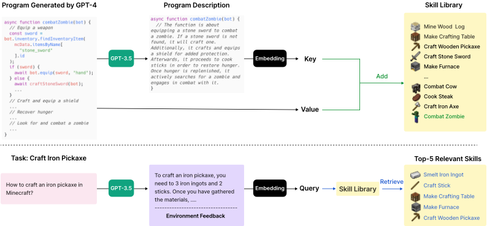
图 4：技能库。上：添加新技能。每当 GPT-4 生成并验证一个新技能时，我们就将其加入技能库中，该技能库以向量数据库（vector database）的形式表示。其键（key）为程序描述的嵌入向量（embedding vector，由 GPT-3.5 生成），而值（value）则为程序本身。下：技能检索。当面对自动课程提出的新任务时，我们首先利用 GPT-3.5 生成解决该任务的一般性建议，并将其与环境反馈相结合作为查询上下文。随后，我们执行查询以找出 top-5 相关技能。
随着自动课程不断提出日益复杂的任务，拥有一个作为学习与进化基础的技能库至关重要。受程序的通用性、可解释性与普适性 [45] 的启发，我们用可执行代码来表示每项技能，这些代码为完成自动课程所提出的特定任务搭建起时间上延展的动作。
4
环境反馈 执行错误
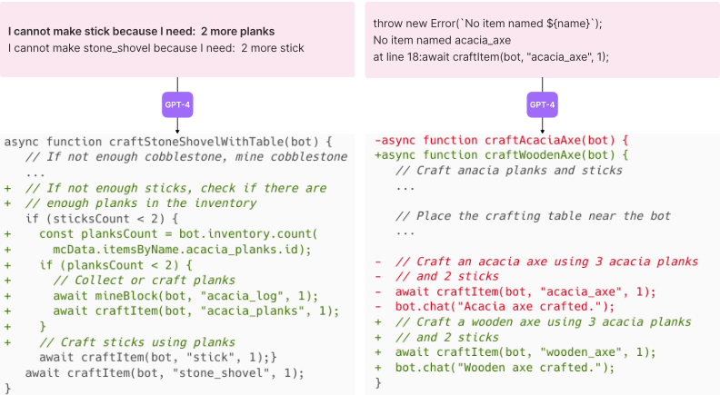
我们通过一种新颖的迭代提示机制（iterative prompting mechanism，第 2.3 节）对程序进行迭代式改进，将其作为一项新技能纳入技能库，并以其描述的嵌入向量作为索引（图 4，上）。在技能检索时，我们以自生成的任务计划与环境反馈的嵌入向量来查询技能库（图 4，下）。通过持续扩展和改进技能库，VOYAGER 能够在广泛的任务中学习、适应并表现出色，在开放世界中不断突破自身能力的边界。
我们提出了一种迭代提示机制（iterative prompting mechanism），通过三种类型的反馈实现自我改进：
在每一轮代码生成中，我们执行生成的程序，以从代码解释器（code interpreter）获取环境反馈和执行错误，并将其纳入 GPT-4 的提示中，用于下一轮的代码改进。这一迭代过程不断重复，直到自我验证（self-verification）确认任务完成为止；此时，我们将这一新技能加入技能库，并向自动课程（automatic curriculum）请求新的目标（图 2）。如果 Agent 在 4 轮代码生成后陷入停滞，我们则向课程查询另一项任务。这种迭代提示方法显著改进了面向具身控制的程序合成，使 VOYAGER 能够在无需人工干预的情况下持续习得多样化技能。
5
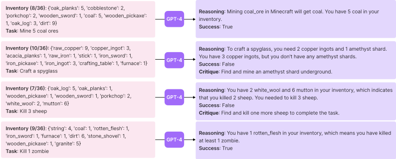
我们使用 OpenAI 的 gpt-4-0314 [35] 和 gpt-3.5-turbo-0301 [50] API 进行文本补全，并使用 text-embedding-ada-002 [51] API 进行文本嵌入。除自动课程使用 temperature = 0.1 以鼓励任务多样性外，我们将所有 temperature 均设为 0。我们的模拟环境构建于 MineDojo [23] 之上，并利用 Mineflayer [52] 的 JavaScript API 进行运动控制。更多细节请参见附录 B.1 节。
由于目前没有开箱即用、可直接用于 Minecraft 的基于大语言模型（LLM）的智能体，我们尽力选取了若干具有代表性的算法作为基线。这些方法最初仅为不具身（embodiment）的自然语言处理（NLP）任务而设计，因此我们必须对它们进行重新诠释，使其能够在 MineDojo 中执行并与我们的实验设置兼容：
ReAct [29] 采用思维链（chain-of-thought, CoT）提示 [46]，利用 LLM 同时生成推理轨迹和动作计划。我们为其提供环境反馈和智能体状态作为观测。
Reflexion [30] 构建于 ReAct [29] 之上，通过自我反思来推断更符合直觉的未来动作。我们为其提供执行错误以及我们的自我验证模块。
AutoGPT [28] 是一款流行的软件工具，它通过将高层目标分解为多个子目标并以 ReAct 风格的循环加以执行，从而实现 NLP 任务的自动化。我们使用 GPT-4 进行任务分解，重新实现了 AutoGPT，并为其提供智能体状态、环境反馈和执行错误作为子目标执行时的观测。与 VOYAGER 相比，AutoGPT 缺少用于积累知识的技能库、用于评估任务是否成功的自我验证，以及用于开放式探索的自动课程。
请注意，我们并未与以往那些以 Minecraft 屏幕像素为输入并输出低层控制的方法 [53-55] 进行直接比较。那样做并非同类比较（apple-to-apple），因为我们依赖高层的 Mineflayer [52] API 来控制智能体。我们工作的重点在于推动 GPT-4 在终身具身智能体学习方面的极限，而非解决 3D 感知或感觉运动控制问题。VOYAGER 与这些工作是正交的，只要控制器提供代码 API，便可与 VPT [8] 等基于梯度的方法相结合。我们在表 A.2 中对 VOYAGER 与以往的 Minecraft 智能体进行了系统级比较。
6
| Method | Wooden Tool | Stone Tool | Iron Tool | Diamond Tool |
|---|---|---|---|---|
| ReAct [29] | N/A ( 0 / 3 ) | N/A ( 0 / 3 ) | N/A ( 0 / 3 ) | N/A ( 0 / 3 ) |
| Reflexion [30] | N/A ( 0 / 3 ) | N/A ( 0 / 3 ) | N/A ( 0 / 3 ) | N/A ( 0 / 3 ) |
| AutoGPT [28] | 92 ± 72 ( 3 / 3 ) | 94 ± 72 ( 3 / 3 ) | 135 ± 103 ( 3 / 3 ) | N/A ( 0 / 3 ) |
| VOYAGER w/o Skill Library | 7 ± 2 ( 3 / 3 ) | 9 ± 4 ( 3 / 3 ) | 29 ± 11 ( 3 / 3 ) | N/A ( 0 / 3 ) |
| VOYAGER (Ours) | 6 ± 2 ( 3 / 3 ) | 11 ± 2 ( 3 / 3 ) | 21 ± 7 ( 3 / 3 ) | 102 ( 1 / 3 ) |
| Method | Wooden Tool | Stone Tool | Iron Tool | Diamond Tool |
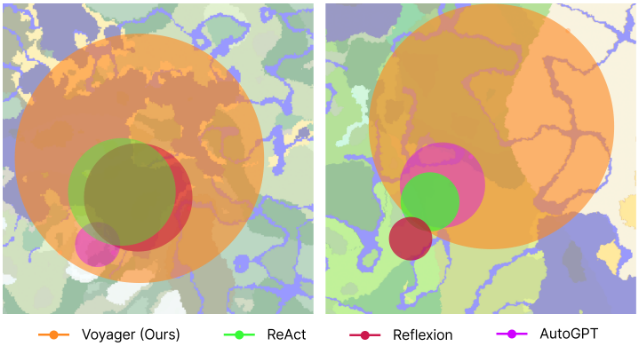
我们在探索性能、科技树掌握程度、地图覆盖范围以及在新世界中针对新任务的零样本（zero-shot）泛化能力方面，对 VOYAGER 与各基线方法进行了系统评估。
显著更优的探索表现。探索性能的结果如图 1 所示。VOYAGER 的优势显而易见：它能够持续取得新进展，在 160 次提示迭代中发现了 63 种独特物品，发现的新颖物品数量是其他对照方法的 3.3 倍。相比之下，AutoGPT 在发现新物品方面明显滞后，而 ReAct 和 Reflexion 则难以取得显著进展，这是因为开放式探索目标较为抽象，在缺乏合适课程的情况下难以执行。
持续稳定的科技树掌握能力。Minecraft 科技树考验智能体合成并使用层级化工具体系的能力。沿该科技树推进（木制工具 → 石制工具 → 铁制工具 → 钻石工具）要求智能体掌握系统性与组合性的技能。与基线方法相比，VOYAGER 解锁木制等级的速度快 15.3 倍（以提示迭代次数计），解锁石制等级快 8.5 倍，解锁铁制等级快 6.4 倍，并且 VOYAGER 是唯一解锁科技树钻石等级的方法（图 2 和表 1）。这凸显了自动课程的有效性，它能够持续提供复杂度适宜的挑战，促进智能体的进步。
大范围的地图遍历。通过穿越多种地形，VOYAGER 能够行进的距离达到基线方法的 2.3 倍，而基线智能体往往局限于局部区域，这极大地削弱了它们发现新知识的能力（图 7）。
| Method | Diamond Pickaxe | Golden Sword | Lava Bucket | Compass |
|---|---|---|---|---|
| ReAct [29] | N/A ( 0 / 3 ) | N/A ( 0 / 3 ) | N/A ( 0 / 3 ) | N/A ( 0 / 3 ) |
| Reflexion [30] | N/A ( 0 / 3 ) | N/A ( 0 / 3 ) | N/A ( 0 / 3 ) | N/A ( 0 / 3 ) |
| AutoGPT [28] | N/A ( 0 / 3 ) | N/A ( 0 / 3 ) | N/A ( 0 / 3 ) | N/A ( 0 / 3 ) |
| AutoGPT [28] w/ Our Skill Library | 39 ( 1 / 3 ) | 30 ( 1 / 3 ) | N/A ( 0 / 3 ) | 30 ( 2 / 3 ) |
| VOYAGER w/o Skill Library | 36 ( 2 / 3 ) | 30 ± 9 ( 3 / 3 ) | 27 ± 9 ( 3 / 3 ) | 26 ± 3 ( 3 / 3 ) |
| VOYAGER (Ours) | 19 ± 3 ( 3 / 3 ) | 18 ± 7 ( 3 / 3 ) | 21 ± 5 ( 3 / 3 ) | 18 ± 2 ( 3 / 3 ) |
| Method | Diamond Pickaxe | Golden Sword | Lava Bucket | Compass |
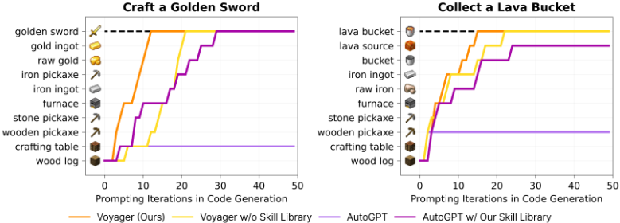
对未见任务的高效零样本泛化。为了评估零样本泛化能力，我们清空智能体的物品栏，将其重置到一个新实例化的世界中，并用未见过的任务对其进行测试。对于 VOYAGER 和 AutoGPT，我们都利用 GPT-4 将任务分解为一系列子目标。表 2 和图 8 显示，VOYAGER 能够稳定地解决所有任务，而基线方法在 50 次提示迭代内无法解决任何任务。有趣的是，我们通过终身学习构建的技能库不仅提升了 VOYAGER 的性能，也为 AutoGPT 带来了提升。这表明技能库是一种通用工具，可被其他方法直接采用，实际上充当了即插即用的资产，能够有效提升性能。
我们在 VOYAGER 中对 6 项设计选择（自动课程、技能库、环境反馈、执行错误、自我验证以及使用 GPT-4 进行代码生成）进行消融实验，并研究它们对探索性能的影响（各消融变体的详情见附录 B.3 节）。结果如图 9 所示。我们重点强调以下关键发现：
8
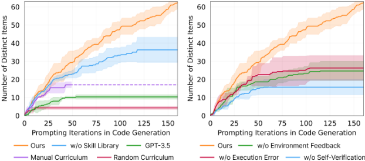
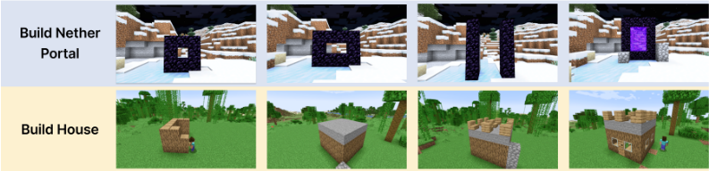
VOYAGER 目前尚不支持视觉感知，因为在撰写本文时，可用的 GPT-4 API 版本仅支持文本。然而，VOYAGER 有潜力通过多模态感知模型 [58, 59] 得到增强，从而完成更令人印象深刻的任务。我们展示了在给定人类反馈的情况下，VOYAGER 能够在 Minecraft 中构建复杂的 3D 结构，例如下界传送门（Nether Portal）和房屋（图 10）。整合人类反馈有两种方式：
9
成本。GPT-4 API 会产生高昂的成本，其价格是 GPT-3.5 的 15 倍。尽管如此，VOYAGER 仍需要 GPT-4 在代码生成质量上实现质的飞跃（图 9），而这是 GPT-3.5 和开源 LLM 无法提供的 [60]。
不准确性。尽管采用了迭代提示机制，仍然存在 Agent 陷入停滞而无法生成正确技能的情况。自动课程具有灵活性，可以在稍后重新尝试该任务。偶尔，自我验证模块也可能失效，例如未能将蜘蛛线（spider string）识别为成功击败蜘蛛的信号。
幻觉。自动课程偶尔会提出无法实现的任务。例如，它可能要求 Agent 合成“铜剑”（copper sword）或“铜胸甲”（copper chestplate），而这些物品在游戏中并不存在。幻觉也会出现在代码生成过程中。例如，GPT-4 倾向于将圆石（cobblestone）用作燃料输入，尽管圆石在游戏中并非有效的燃料来源。此外，它还可能调用所提供的控制原语 API 中不存在的函数，从而导致代码执行错误。
我们相信，GPT API 模型的改进以及微调开源 LLM 的新型技术将在未来克服这些局限性。
Minecraft 中的决策 Agent。Minecraft 是一个开放式 3D 世界，其游戏机制极为灵活，支持广泛的活动。基于著名的 Minecraft 基准测试 [23, 61-65]，Minecraft 学习算法可分为两类：1）底层控制器：许多先前的工作利用分层强化学习从人类示范中学习 [66-68]。Kanitscheider 等人 [14] 设计了一种基于成功率的课程，但其目标仅限于精选物品。MineDojo [23] 和 VPT [8] 利用 YouTube 视频进行大规模预训练。而 DreamerV3 [69] 则学习一个世界模型来探索环境并收集钻石。2）高层规划器：Volum 等人 [70] 利用基于 Codex [41] 的少样本提示来生成可执行策略，但需要额外的人类交互。近期的工作利用大语言模型（LLM）作为 Minecraft 中的高层规划器，按照 Minecraft 配方将高层任务分解为若干子目标 [55, 53, 71]，因而缺乏充分的探索灵活性。与后一类工作类似，VOYAGER 也通过提示 GPT-4 将 LLM 用作高层规划器，并遵循 Volum 等人 [70] 的做法，采用 Mineflayer [52] 作为底层控制器。与先前工作不同的是，VOYAGER 采用了一种自底向上展开、由好奇心驱动的自动课程，从而实现开放式探索。
面向智能体规划的大语言模型。受大语言模型（LLM）强大的涌现能力（如零样本提示和复杂推理 [72, 37, 38, 36, 73, 74]）的启发，具身智能体研究 [75-78] 在利用 LLM 进行规划方面出现了显著增长。近期的工作大致可分为两类。1）用于机器人学习的大语言模型：许多先前的工作应用 LLM 为机器人规划生成子目标 [27, 27, 25, 79, 80]。Inner Monologue [26] 在基于 LLM 的机器人规划中引入了环境反馈。Code as Policies [16] 和 ProgPrompt [22] 直接利用 LLM 生成可执行的机器人策略。VIMA [19] 和 PaLM-E [59] 对预训练的 LLM 进行微调以支持多模态提示。2）用于文本智能体的大语言模型：ReAct [29] 利用思维链（CoT）提示 [46]，通过 LLM 同时生成推理轨迹和任务特定动作。Reflexion [30] 在 ReAct [29] 的基础上构建，通过自我反思来增强推理。AutoGPT [28] 是一个广受欢迎的工具，它通过为完成高层目标而制定由多个子目标构成的课程来自动化自然语言处理（NLP）任务，同时融入了 ReAct [29] 的推理与行动循环。DERA [81] 将任务构建为两个 GPT-4 [35] 智能体之间的对话。Generative Agents [82] 利用 ChatGPT [50]，通过将智能体的经验存储为记忆并检索这些记忆用于规划来模拟人类行为，但其智能体动作是不可执行的。SPRING [83] 是一项同期工作，它使用 GPT-4 从游戏手册中提取游戏机制，并在此基础上回答以有向无环图形式排列的问题并预测下一个动作。所有这些工作都缺乏用于开发更复杂行为的技能库，而技能库是 VOYAGER 在终身学习中取得成功的关键组成部分。
结合执行的代码生成。代码生成一直是 NLP 领域的一个长期挑战 [41, 84, 85, 73, 37]，已有多种工作利用执行结果来改进程序合成。执行引导方法利用中间执行结果来引导程序搜索 [86-88]。另一类研究利用多数投票，根据候选程序的执行性能来选择候选 [89, 90]。此外，LEVER [91] 训练一个验证器，根据执行结果来区分并拒绝不正确的程序。另一方面，CLAIRIFY [92] 生成用于规划化学实验的代码，并利用基于规则的验证器向 LLM 迭代地提供错误反馈。VOYAGER 与这些工作的不同之处在于，它将环境反馈、执行错误和自我验证（用于评估任务是否成功）整合到面向具身控制的迭代提示机制中。
在本工作中，我们提出了 VOYAGER，这是首个由大语言模型（LLM）驱动的具身终身学习智能体，它利用 GPT-4 持续探索世界，开发日益复杂的技能，并在无需人工干预的情况下不断做出新发现。VOYAGER 在发现新物品、解锁 Minecraft 科技树、穿越多样地形，以及将其学到的技能库应用于新实例化世界中的未见任务等方面表现出卓越的性能。VOYAGER 为在不调整模型参数的情况下开发强大的通用智能体提供了一个起点。
我们的研究在 Minecraft 中进行，这是一个安全且无害的 3D 视频游戏环境。尽管 VOYAGER 的设计使其可普遍适用于其他领域（例如机器人技术），但将其应用于实体机器人时，需要人类给予额外的关注并实施安全约束，以确保负责任且安全的部署。
我们非常感谢 Ziming Zhu、Kaiyu Yang、Rafał Kocielnik、Colin White、Or Sharir、Sahin Lale、De-An Huang、Jean Kossaifi、Yuncong Yang、Charles Zhang、Minchao Huang 以及许多其他同事和朋友，感谢他们提供的有益反馈与富有洞见的讨论。本工作是 Guanzhi Wang 在 NVIDIA 实习期间完成的。Guanzhi Wang 得到了加州理工学院（Caltech）计算与数学科学系 Kortschak 奖学金的资助。
def voyager(
environment, # 以代码作为动作空间的环境
curriculum_agent, # 用于提出下一个任务的课程 Agent
action_agent, # 用于代码生成的动作 Agent
critic_agent, # 用于自我验证的评判 Agent
skill_manager, # 用于添加新技能与技能检索的技能管理器
):
agent_state = environment.reset()
while True:
exploration_progress = (
curriculum_agent.get_exploration_progress(
curriculum_agent.get_completed_tasks(),
curriculum_agent.get_failed_tasks(),
)
)
task = curriculum_agent.propose_next_task(
agent_state,
exploration_progress
)
code = None
environment_feedback = None
execution_errors = None
critique = None
success = False
# 在转向下一个任务之前最多尝试 4 轮
for i in range(4):
skills = skill_manager.retrieve_skills(
task,
environment_feedback
)
code = action_agent.generate_code(
task,
code,
environment_feedback,
execution_errors,
critique,
skills,
)
(
agent_state,
environment_feedback,
execution_errors,
) = environment.step(code)
success, critique = critic_agent.check_task_success(
task,
agent_state
)
if success:
break
if success:
skill_manager.add_skill(code)
curriculum_agent.add_completed_task(task)
else:
curriculum_agent.add_failed_task(task)
GPT-4 和 GPT-3.5 为用户提供了在三种选项中为每条提示消息指定角色的能力：
19
更多细节请参见 https://platform.openai.com/docs/guides/chat/introduction。
为了节省 token 用量，我们不再进行多轮对话，而是将系统提示（system prompt）与用户提示（user prompt）拼接起来，以获得每个 assistant 的响应。
我们利用 GPT-3.5 进行自问（self-ask），以提供额外的上下文。每个问题都与一个概念配对，该概念用于从 wiki 知识库 [23] 中检索最相关的文档。我们将文档内容输入给 GPT-3.5，使其对问题进行自答。在实践中，使用 wiki 知识库是可选的，因为 GPT-3.5 已经对 Minecraft 游戏机制具备良好的理解。然而，如果 GPT-3.5 未曾在该特定领域进行过预训练，外部知识库便会显现出优势。完整的提示请参见第 A.3.4 节。
在实践中，我们采用预热调度（warm-up schedule），根据 agent 已完成的任务数量，逐步将 agent 的状态和附加上下文纳入提示（prompt）中。这确保了提示在探索进程中接触到越来越多的信息，从而从基本技能开始，并逐步向更复杂、更多样的技能推进。我们在所有实验中使用的预热设置如表 A.1 所示。
| Information in the prompt | After how many tasks are completed |
|---|---|
| core inventory (only including log, planks, stick, crafting table, furnace, dirt, coal, pickaxe, sword, and axe) equipment nearby blocks position nearby entities full inventory other blocks that are recently seen biome health bar hunger bar time additional context | 0 0 0 0 5 7 10 10 15 15 15 15 |
| Information in the prompt | After how many tasks are completed |
你是一个乐于助人的助手，通过提出问题来帮助我决定在 Minecraft 中接下来要完成的即时任务。我的最终目标是发现尽可能多的事物、完成尽可能多的任务，并成为世界上最优秀的 Minecraft 玩家。我将向你提供以下信息：
Biome: ...
Time: ...
Nearby blocks: ...
Other blocks that are recently seen: ...
Nearby entities (nearest to farthest): ...
Health: ...
Hunger: ...
Position: ...
Equipment: ...
Inventory (xx/36): ...
Chests: ...
Completed tasks so far: ...
Failed tasks that are too hard: ...
你必须遵循以下准则：
1) 你应该提出至少 5 个问题（但不超过 10 个问题），以帮助我决定接下来要完成的即时任务。每个问题后面应附上该问题所针对的概念。
2) 你的问题应针对 Minecraft 中的某个具体概念。反面示例（该问题过于宽泛）：
22
问题：玩 Minecraft 的最佳方式是什么？概念：未知 坏示例（“斧头”仍然过于宽泛，你应当指明斧头的具体类型，例如木斧（wooden axe））：使用斧头收集资源有什么好处？概念：斧头 好示例：问题：如何制作木镐（wooden pickaxe）？概念：木镐 3) 你的问题应当是自包含的（self-contained），且不需要任何上下文。坏示例（该问题需要我当前所处生物群系（biome）的上下文）：问题：在我当前的生物群系中能找到哪些方块？概念：未知 坏示例（该问题需要我当前物品栏（inventory）的上下文）：问题：你目前最需要哪些资源？概念：未知 坏示例（该问题需要我当前物品栏的上下文）：问题：你有没有金（gold）或绿宝石（emerald）资源？概念：金 坏示例（该问题需要我附近实体（entities）的上下文）：问题：你能看到附近有没有可以杀死来作为食物的动物？概念：食物 坏示例（该问题需要我附近方块的上下文）：问题：附近有水源吗？概念：水 好示例：问题：在稀疏丛林（sparse jungle）中能找到哪些方块？概念：稀疏丛林 4) 不要提出关于建造类任务（例如建造庇护所）的问题，因为它们对我来说太难完成。假设你当前的生物群系是稀疏丛林，你可以提出如下问题：问题：在稀疏丛林中能找到哪些物品？概念：稀疏丛林 问题：在稀疏丛林中能找到哪些生物（mobs）？概念：稀疏丛林 假设你看到附近有一只苦力怕（creeper），而你此前从未击败过苦力怕，你可以提出如下问题：问题：如何击败苦力怕？概念：苦力怕 假设你上一个完成的任务是“制作一把木镐（Craft a wooden pickaxe）”，你可以提出如下问题：问题：在制作木镐之后，建议我可以做哪些任务？概念：木镐 下面是更多问题与概念的示例：问题：在稀疏丛林中能找到哪些矿石？概念：稀疏丛林（上述概念不应是“矿石”，因为我需要查阅“稀疏丛林”页面才能弄清在稀疏丛林中能找到哪些矿石）问题：在稀疏丛林中你如何获得食物？概念：稀疏丛林
23
24
你是一个乐于助人的助手，负责编写 Mineflayer javascript 代码来完成我指定的任何 Minecraft 任务。以下是一些使用 Mineflayer API 编写的实用程序。/* 探索直到找到 iron_ore，使用 Vec3(0, -1, 0)，因为铁矿石通常在地下 await exploreUntil(bot, new Vec3(0, -1, 0), 60, () => { const iron_ore = bot.findBlock({ matching: mcData.blocksByName["iron_ore"].id, maxDistance: 32, }); return iron_ore; }); 探索直到找到猪，使用 Vec3(1, 0, 1)，因为猪通常在地表 let pig = await exploreUntil(bot, new Vec3(1, 0, 1), 60, () => { const pig = bot.nearestEntity((entity) => { return ( entity.name === "pig" && entity.position.distanceTo(bot.entity.position) < 32 ); }); return pig; }); */ async function exploreUntil(bot, direction , maxTime = 60, callback) { /* 此函数的实现省略。direction：Vec3，只能包含 -1、0 或 1 中的值 maxTime：数字，探索的最长时间 callback：函数，提前停止条件，每秒被调用一次，若返回值不为 null 则探索停止 返回值：若探索超时则返回 null，否则返回 callback 的返回值 */ } // 挖掘 3 个圆石：mineBlock(bot, "stone", 3); async function mineBlock(bot, name , count = 1) { const blocks = bot.findBlocks({ matching: (block) => { return block.name === name; }, maxDistance: 32, count: count , }); const targets = []; for (let i = 0; i < Math.min(blocks.length , count); i++) { targets.push(bot.blockAt(blocks[i])); } await bot.collectBlock.collect(targets , { ignoreNoPath: true }); } // 用 2 个 oak_log 合成 8 个 oak_planks（执行该配方 2 次）：craftItem(bot, "oak_planks", 2);
// 调用此函数前必须先放置一个工作台
async function craftItem(bot, name, count = 1) {
const item = mcData.itemsByName[name];
const craftingTable = bot.findBlock({
matching: mcData.blocksByName.crafting_table.id,
maxDistance: 32,
});
await bot.pathfinder.goto(
new GoalLookAtBlock(craftingTable.position, bot.world)
);
const recipe = bot.recipesFor(item.id, null, 1, craftingTable)[0];
await bot.craft(recipe, count, craftingTable);
}
// 在玩家附近放置一个 crafting_table，Vec3(1, 0, 0) 仅是一个示例，你不应总是使用它：
placeItem(bot, "crafting_table", bot.entity.position.offset(1, 0, 0));
async function placeItem(bot, name, position) {
const item = bot.inventory.findInventoryItem(mcData.itemsByName[name].id);
// 寻找一个参考方块
const faceVectors = [
new Vec3(0, 1, 0),
new Vec3(0, -1, 0),
new Vec3(1, 0, 0),
new Vec3(-1, 0, 0),
new Vec3(0, 0, 1),
new Vec3(0, 0, -1),
];
let referenceBlock = null;
let faceVector = null;
for (const vector of faceVectors) {
const block = bot.blockAt(position.minus(vector));
if (block?.name !== "air") {
referenceBlock = block;
faceVector = vector;
break;
}
}
// 你必须先前往你想要放置的方块位置
await bot.pathfinder.goto(new GoalPlaceBlock(position, bot.world, {}));
// 你必须在调用 placeBlock 之前立即装备该物品
await bot.equip(item, "hand");
await bot.placeBlock(referenceBlock, faceVector);
}
// 使用 1 个 oak_planks 作为燃料，将 1 个 raw_iron 冶炼成 1 个 iron_ingot：
smeltItem(bot, "raw_iron", "oak_planks");
// 调用此函数前必须先放置一个熔炉
async function smeltItem(bot, itemName, fuelName, count = 1) {
const item = mcData.itemsByName[itemName];
const fuel = mcData.itemsByName[fuelName];
const furnaceBlock = bot.findBlock({
matching: mcData.blocksByName.furnace.id,
maxDistance: 32,
});
await bot.pathfinder.goto(
new GoalLookAtBlock(furnaceBlock.position, bot.world)
);
const furnace = await bot.openFurnace(furnaceBlock);
for (let i = 0; i < count; i++) {
await furnace.putFuel(fuel.id, null, 1);
27
await furnace.putInput(item.id, null , 1); // 等待12秒让熔炉熔炼物品 await bot.waitForTicks(12 * 20); await furnace.takeOutput(); } await furnace.close(); } // 杀死一头猪并收集掉落的物品：killMob(bot, "pig", 300); async function killMob(bot, mobName , timeout = 300) { const entity = bot.nearestEntity( (entity) => entity.name === mobName && entity.position.distanceTo(bot.entity.position) < 32 ); await bot.pvp.attack(entity); await bot.pathfinder.goto( new GoalBlock(entity.position.x, entity.position.y, entity. position.z) ); } // 从位于 (30, 65, 100) 处的箱子中获取火把：getItemFromChest(bot, new Vec3(30, 65, 100), {"torch": 1}); // 无论机器人距离箱子有多远，此函数都能正常工作。 async function getItemFromChest(bot, chestPosition , itemsToGet) { await moveToChest(bot, chestPosition); const chestBlock = bot.blockAt(chestPosition); const chest = await bot.openContainer(chestBlock); for (const name in itemsToGet) { const itemByName = mcData.itemsByName[name]; const item = chest.findContainerItem(itemByName.id); await chest.withdraw(item.type, null , itemsToGet[name]); } await closeChest(bot, chestBlock); } // 将火把存入位于 (30, 65, 100) 处的箱子：depositItemIntoChest( bot, new Vec3(30, 65, 100), {"torch": 1}); // 无论机器人距离箱子有多远，此函数都能正常工作。 async function depositItemIntoChest(bot, chestPosition , itemsToDeposit ) { await moveToChest(bot, chestPosition); const chestBlock = bot.blockAt(chestPosition); const chest = await bot.openContainer(chestBlock); for (const name in itemsToDeposit) { const itemByName = mcData.itemsByName[name]; const item = bot.inventory.findInventoryItem(itemByName.id); await chest.deposit(item.type, null , itemsToDeposit[name]); } await closeChest(bot, chestBlock); } // 检查位于 (30, 65, 100) 处的箱子内的物品：checkItemInsideChest(bot, new Vec3(30, 65, 100)); // 你只需调用此函数一次，无需执行任何其他操作，即可完成检查箱子内物品的任务。 async function checkItemInsideChest(bot, chestPosition) { await moveToChest(bot, chestPosition); const chestBlock = bot.blockAt(chestPosition); await bot.openContainer(chestBlock); // 如果被要求打开箱子，你必须在打开后将其关闭
28
你是一个乐于助人的助手，负责为给定的、用 Mineflayer javascript 代码编写的函数撰写描述。1) 不要提及函数名。2) 不要提及任何与 'bot.chat' 或辅助函数有关的内容。3) 主函数之前可能存在一些辅助函数，但你只需要描述主函数。4) 尽量用不超过 6 句话来总结该函数。5) 你的回答应为单行文本。例如，如果函数是：async function mineCobblestone(bot) { // Check if the wooden pickaxe is in the inventory, if not, craft one let woodenPickaxe = bot.inventory.findInventoryItem(mcData.itemsByName["wooden_pickaxe"].id); if (!woodenPickaxe) { bot.chat("Crafting a wooden pickaxe."); await craftWoodenPickaxe(bot); woodenPickaxe = bot.inventory.findInventoryItem(mcData.itemsByName["wooden_pickaxe"].id); } // Equip the wooden pickaxe if it exists if (woodenPickaxe) { await bot.equip(woodenPickaxe, "hand"); // Explore until we find a stone block await exploreUntil(bot, new Vec3(1, -1, 1), 60, () => { const stone = bot.findBlock({ matching: mcData.blocksByName["stone"].id, maxDistance: 32 }); if (stone) { return true; } }); // Mine 8 cobblestone blocks using the wooden pickaxe bot.chat("Found a stone block. Mining 8 cobblestone blocks."); await mineBlock(bot, "stone", 8); bot.chat("Successfully mined 8 cobblestone blocks."); // Save the event of mining 8 cobblestone bot.save("cobblestone_mined"); } else { bot.chat("Failed to craft a wooden pickaxe. Cannot mine cobblestone."); } } 主函数是 'mineCobblestone'。那么你应该写出：
31
该函数是关于使用木镐挖掘 8 个圆石。首先检查物品栏中是否有木镐。如果没有，则制作一个。如果木镐可用，则将木镐装备到手上。接下来，探索环境直到找到石头方块。一旦找到石头方块，就使用木镐挖掘总共 8 个圆石方块。
async function craftWoodenPlanks(bot) { const logNames = ["oak_log", "birch_log", "spruce_log", "jungle_log" , "acacia_log", "dark_oak_log", "mangrove_log"]; const plankNames = ["oak_planks", "birch_planks", "spruce_planks", " jungle_planks", "acacia_planks", "dark_oak_planks", " mangrove_planks"]; const logInInventory = logNames.find(logName => bot.inventory.count( mcData.itemsByName[logName].id) > 0); if (!logInInventory) { bot.chat("No wooden log in inventory. Mining a wooden log..."); await mineWoodLog(bot); } const logIndex = logNames.indexOf(logInInventory); const plankName = plankNames[logIndex]; bot.chat('Crafting 4 ${plankName}...'); await craftItem(bot, plankName , 1); bot.chat('4 ${plankName} crafted.'); }
async function mineTenCobbledDeepslateBelowY0(bot) { // 装备铁镐 const ironPickaxe = bot.inventory.findInventoryItem(mcData. itemsByName["iron_pickaxe"].id); await bot.equip(ironPickaxe , "hand"); // 寻找 Y=0 以下的 cobbled_deepslate 方块 const cobbledDeepslateBlocks = await exploreUntil(bot, new Vec3(1, -1, 1), 60, () => { const cobbledDeepslate = bot.findBlock({ matching: mcData.blocksByName["cobbled_deepslate"].id, maxDistance: 32, position: pos => pos.y < 0 }); return cobbledDeepslate; }); // 挖掘 10 个 cobbled_deepslate 方块 await mineBlock(bot, "cobbled_deepslate", 10); bot.chat("10 cobbled_deepslate mined below Y=0."); }
async function findSuitablePosition(bot) { const offsets = [new Vec3(1, 0, 0), new Vec3(-1, 0, 0), new Vec3(0, 0, 1), new Vec3(0, 0, -1)]; for (const offset of offsets) { const position = bot.entity.position.offset(offset.x, offset.y, offset.z); const block = bot.blockAt(position);
32
if (block.name === "air") { return position; } } return null; } async function smeltFiveRawIron(bot) { // 检查物品栏中是否有熔炉 const furnaceItem = bot.inventory.findInventoryItem(mcData. itemsByName.furnace.id); // 如果没有，则使用现有的圆石合成一个熔炉 if (!furnaceItem) { await craftFurnace(bot); } // 寻找合适的位置来放置熔炉 const furnacePosition = await findSuitablePosition(bot); if (!furnacePosition) { bot.chat("Could not find a suitable position to place the furnace. "); return; } // 将熔炉放置在合适的位置 await placeItem(bot, "furnace", furnacePosition); // 使用现有的煤作为燃料冶炼 5 个 raw_iron await smeltItem(bot, "raw_iron", "coal", 5); bot.chat("5 raw iron smelted."); }
async function fillBucketWithWater(bot) { // 在附近寻找一个水方块 const waterBlock = await exploreUntil(bot, new Vec3(1, 0, 1), 60, () => { const water = bot.findBlock({ matching: mcData.blocksByName.water.id, maxDistance: 32 }); return water; }); if (!waterBlock) { bot.chat("Could not find water."); return; } // 前往水方块 const adjacentBlock= waterBlock.position.offset(0, 1, 0); await bot.pathfinder.goto( new GoalGetToBlock(adjacentBlock.x, adjacentBlock.y, adjacentBlock.z) ); // 看向水方块 await bot.lookAt(waterBlock.position , true); // 装备水桶 const bucket = bot.inventory.findInventoryItem(mcData.itemsByName. bucket.id); await bot.equip(bucket , "hand");
33
// 激活水桶以收集水 await bot.activateItem(); bot.chat("Filled the bucket with water."); }
async function catchFiveFishSafely(bot) { // 检查机器人的物品栏中是否有钓鱼竿 let fishingRod = bot.inventory.findInventoryItem(mcData.itemsByName. fishing_rod.id); if (!fishingRod) { await craftFishingRod(bot); fishingRod = bot.inventory.findInventoryItem(mcData.itemsByName. fishing_rod.id); } // 寻找附近的水方块 let waterBlock; while (!waterBlock) { waterBlock = await exploreUntil(bot, new Vec3(1, 0, 1), 60, () => { const foundWaterBlock = bot.findBlock({ matching: mcData.blocksByName.water.id, maxDistance: 32 }); return foundWaterBlock; }); if (!waterBlock) { bot.chat("No path to the water block. Trying to find another water block..."); } } // 移动到与水方块相邻的方块 const adjacentBlock = waterBlock.position.offset(0, 1, 0); await bot.pathfinder.goto(new GoalBlock(adjacentBlock.x, adjacentBlock.y, adjacentBlock.z)); // 注视水方块 await bot.lookAt(waterBlock.position); // 装备钓鱼竿 await bot.equip(fishingRod , "hand"); // 在水中钓鱼5次 for (let i = 0; i < 5; i++) { try { await bot.fish(); bot.chat('Fish ${i + 1} caught.'); } catch (error) { if (error.message === "Fishing cancelled") { bot.chat("Fishing was cancelled. Trying again..."); i--; // 重试同一轮迭代 } else { throw error; } } } }
34
"reasoning": "你的物品栏中有腐肉（rotten flesh），这意味着你成功杀死了一只僵尸。", "success": true, "critique": "" } INPUT: 饥饿值：20.0/20.0 物品栏 (11/36): ... 任务：吃 1 个 ... 上下文：... RESPONSE { "reasoning": "对于所有进食任务，如果玩家的饥饿值为 20.0，则说明玩家成功吃掉了食物。", "success": true, "critique": "" } INPUT: 附近方块：箱子 物品栏 (28/36): {'rail': 1, 'coal': 2, 'oak_planks': 13, 'copper_block': 1, 'diorite': 7, 'cooked_beef': 4, 'granite': 22, 'cobbled_deepslate': 23, 'feather': 4, 'leather': 2, 'cooked_chicken': 3, 'white_wool': 2, 'stick': 3, 'black_wool': 1, 'stone_sword': 2, 'stone_hoe': 1, 'stone_axe': 2, 'stone_shovel': 2, 'cooked_mutton': 4, 'cobblestone_wall': 18, 'crafting_table': 1, 'furnace': 1, 'iron_pickaxe': 1, 'stone_pickaxe': 1, 'raw_copper': 12} 箱子：(81, 131, 16): {'andesite': 2, 'dirt': 2, 'cobblestone': 75, 'wooden_pickaxe': 1, 'wooden_sword': 1} 任务：将无用物品存入位于 (81, 131, 16) 的箱子 上下文：... RESPONSE { "reasoning": "存入后你的物品栏中有 28 件物品，超过了 20 件。你需要将物品栏中的更多物品存入箱子。", "success": false, "critique": "再存入更多无用物品，例如 copper_block、diorite、granite、cobbled_deepslate、feather 和 leather，以满足物品栏中仅占用 20 个格子的要求。" }
我们在表 A.2 中进行了系统级比较。Voyager 是唯一一个兼具自动课程（automatic curriculum）、迭代规划（iterative planning）与技能库（skill library）三者组合的方法。此外，它无需任何梯度更新即可学会玩 Minecraft。
37
| VPT [8] | DreamerV3 [69] | DECKARD[53] | DEPS [55] | Plan4MC [71] | VOYAGER | ||
|---|---|---|---|---|---|---|---|
| Demos | Videos | None | Videos | None | None | None | |
| Rewards | Sparse | Dense | Sparse | None | Dense | None | |
| Observations | Pixels Only | Pixels& Meta | Pixels& Inventory | Feedback& Inventory | Pixels& Meta | Feedback& Meta& Inventory | |
| Actions | Keyboard Mouse | & | Discrete | Keyboard & Mouse | Keyboard & Mouse | Discrete | Code |
| Automatic Curriculum | ✓ | ✓ (in-context GPT-4 pro- posal) | |||||
| Iterative Plan- ning | ✓ | ✓ (3 types of feedback) | |||||
| Skill Library | ✓ (pre-defined) | ✓ (self- generated) | |||||
| Gradient-Free | ✓ |
| | VPT [8] | | DreamerV3 [69] | DECKARD[53] | DEPS [55] | Plan4MC [71] | VOYAGER |
我们的仿真环境基于 MineDojo [23] 构建，并利用 Mineflayer [52] 的 JavaScript API 进行运动控制（第 A.4.2 节）。此外，我们在 Mineflayer 函数中加入了大量 bot.chat() 调用，以提供丰富的环境反馈，并实现了各种条件检查以及 try-catch 异常处理，从而保证持续执行。如果 bot 死亡，它会在最靠近的地面附近复活，且其物品栏会被保留，以实现不间断的探索。bot 会在程序执行结束后回收其工作台和熔炉。详细实现请参阅我们的代码库。
ReAct [29] 采用思维链（chain-of-thought, CoT）提示 [46]，利用大语言模型（LLM）同时生成推理轨迹和行动计划。我们向其提供我们的环境反馈和 Agent 状态作为观察。ReAct 从零开始进行一轮代码生成，随后进行三轮代码细化。该过程不断重复，直至达到最大提示迭代次数。
Reflexion [30] 构建在 ReAct [29] 之上，通过自我反思来推断更直观的未来行动。我们向其提供环境反馈、Agent 状态、执行错误以及我们的自我验证模块。与 ReAct 类似，Reflexion 从零开始进行一轮代码生成，随后进行三轮代码细化。该过程不断重复，直至达到最大提示迭代次数。
AutoGPT [28] 是一款流行的软件工具，它通过将高层目标分解为多个子目标，并在 ReAct 风格的循环中执行这些子目标，从而实现自然语言处理（NLP）任务的自动化。我们使用 GPT-4 来执行任务分解，重新实现了 AutoGPT，并向其提供 Agent 状态、环境反馈和执行错误作为子目标执行过程中的观察。与 VOYAGER 相比，AutoGPT 缺少用于积累知识的技能库、用于评估任务是否成功的自我验证，以及用于开放式探索的自动课程。在每个子目标的执行过程中，如果没有出现执行错误，我们就认为该子目标已完成，并继续执行下一个子目标；否则，我们会不断细化程序，直到完成三轮代码细化（相当于四轮代码生成），然后再转向下一个子目标。如果连续三个子目标都没有获得新物品，我们就通过重新运行任务分解来重新规划。
对于所有基线方法，任务均为“探索世界并尽可能多地获取物品”。
38
| ReAct [29] | Reflexion [30] | AutoGPT [28] | VOYAGER | |
|---|---|---|---|---|
| Chain-of-Thought [46] Self Verification Environment Feedback Execution Errors Agent State Skill Library Automatic Curriculum | ✓ ✓ ✓ | ✓ ✓ ✓ ✓ ✓ | ✓ ✓ ✓ ✓ | ✓ ✓ ✓ ✓ ✓ ✓ ✓ |
| | ReAct [29] | Reflexion [30] | AutoGPT [28] | VOYAGER |
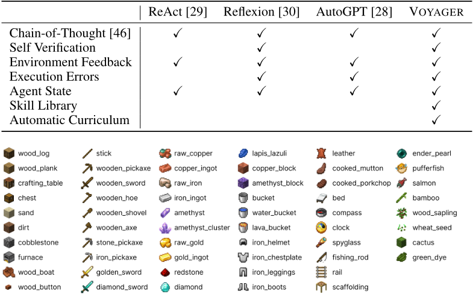
我们在 VOYAGER 中对 6 项设计选择（自动课程、技能库、环境反馈、执行错误、自我验证以及使用 GPT-4 进行代码生成）进行消融实验，并研究它们对探索性能的影响。
图 1 中每个图标的含义如图 A.1 所示。
我们对每种方法运行三次试验。VOYAGER 在每次试验中收集的物品为
39
ReAct [29] 在每次试验中收集的物品为
Reflexion [30] 在每次试验中收集的物品为
AutoGPT [28] 在每次试验中收集的物品为
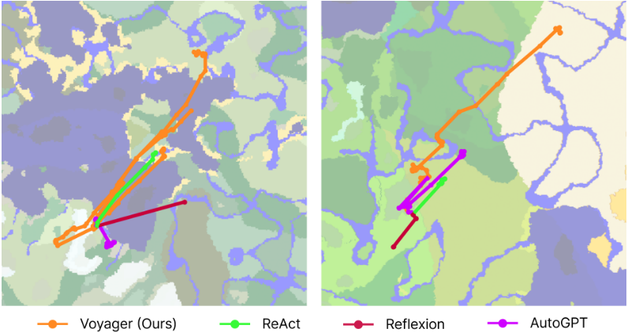
地图覆盖的智能体轨迹如图 A.2 所示。图 7 是基于图 A.2 绘制的，做法是为每条轨迹画出包围它的最小圆。VOYAGER 在每次试验中穿越的地形为
ReAct [29] 在每次试验中穿越的地形为
Reflexion [30] 在每次试验中穿越的地形为
AutoGPT [28] 在每次试验中穿越的地形为
另外两个任务在未见任务上的零样本泛化结果如图 A.3 所示。与图 8 类似，VOYAGER 始终能够解决所有任务，而各基线方法在 50 次提示迭代内无法解决任何任务。我们通过终身学习构建的技能库不仅提升了 VOYAGER 的性能，也为 AutoGPT [28] 提供了助力。
41
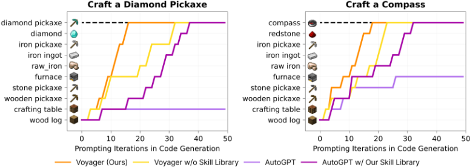
我们对技能检索进行了评估（共 309 个样本），结果见表 A.4。Top-5 准确率达到 96.5%，表明我们的检索过程是可靠的（请注意，我们在用于合成新技能的提示中包含了 Top-5 相关技能）。
| 0 | 1 | 2 | 3 | 4 |
|---|---|---|---|---|
| Top-1 Acc | Top-2 Acc | Top-3 Acc | Top-4 Acc | Top-5 Acc |
| 80 . 2 ± 3 . 0 | 89 . 3 ± 1 . 8 | 93 . 2 ± 0 . 7 | 95 . 2 ± 1 . 8 | 96 . 5 ± 0 . 3 |
| 0 | 1 | 2 | 3 | 4 |
在正文中，Voyager 的所有实验均使用 gpt-4-0314 进行。我们另外使用 gpt-4-0613 运行了新的实验，发现性能大致相同（图 A.4）。这表明 Voyager 对模型变体具有鲁棒性。
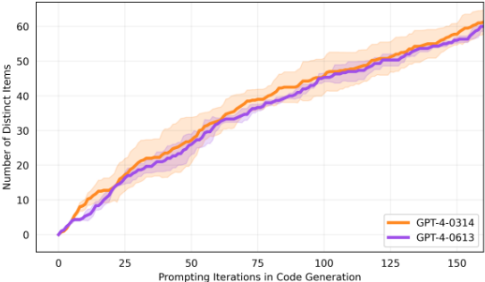
42